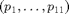

DDE-BIFTOOL state-dependent delays sd-demo
This demo is an illustrative example, showing how to perform bifurcation analysis for a system with state-dependent delays.
The demo shows
- which functions the user has to provide and how to put them into the structure funcs (sd_demo_funcs.html)
- continuation of equilibria and their linear stability sd_demo_stst.html,
- detection and continuation of Hopf bifurcations sd_demo_hopf.html,
- branching off from Hopf bifurcation and continuation of periodic orbits sd_demo_psol.html
% (c) DDE-BIFTOOL v. 3.1.1(20), 11/04/2014
Contents
Differential equations
The differential equations for this example are
![$$\begin{array}{l}
\frac{\mathrm{d}}{\mathrm{d} t}x_1(t)=\frac{1}{p_1+x_2(t)}\left(1-p_2x_1(t)x_1(t-\tau_3)
x_3(t-\tau_3)+p_3x_1(t-\tau_1)x_2(t-\tau_2)\right),\\
\frac{\mathrm{d}}{\mathrm{d} t}x_2(t)=\frac{p_4 x_1(t)}{p_1+x_2(t)}+
p_5\tanh(x_2(t-\tau_5))-1,\\
\frac{\mathrm{d}}{\mathrm{d} t}x_3(t)=p_6(x_2(t)-x_3(t))-p_7(x_1(t-\tau_6)-x_2(t-\tau_4))e^{-p_8 \tau_5},\\
\frac{\mathrm{d}}{\mathrm{d} t}x_4(t)=x_1(t-\tau_4)e^{-p_1 \tau_5} -0.1,\\
\frac{\mathrm{d}}{\mathrm{d} t}x_5(t)=3(x_1(t-\tau_2)-x_5(t))-p_9,
\end{array} $$](sd_demo_eq70772.png)
where and  are constant delays and
are constant delays and
This system has five components , six delays and eleven parameters , where and .
clear; % clear variables close all; % close figures addpath('../../ddebiftool/'); % add ddebiftool folder to path %#ok<*ASGLU,*NOPTS,*NASGU>